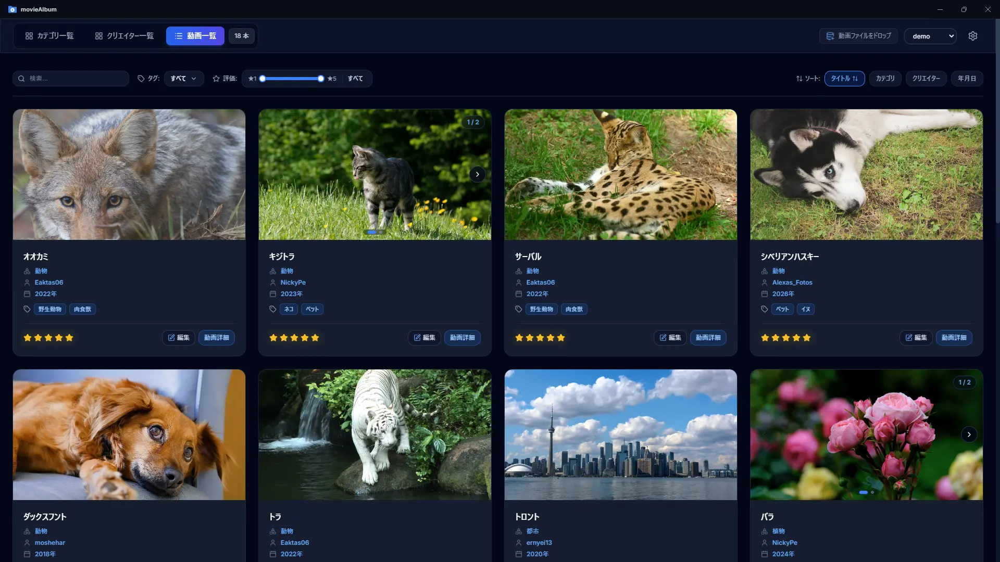
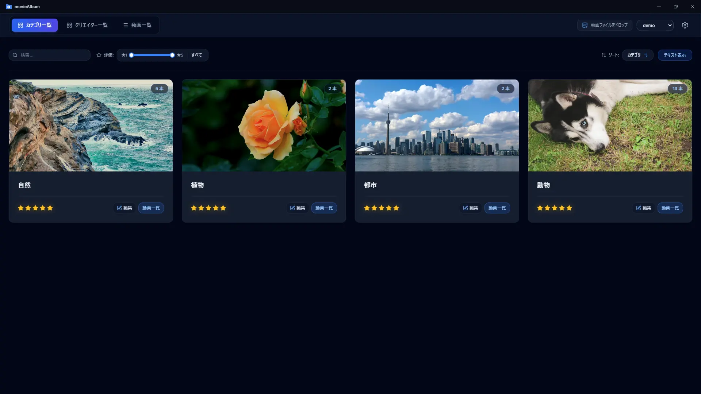
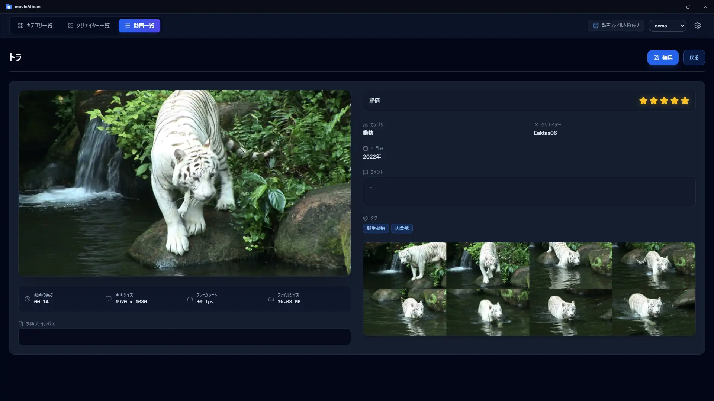
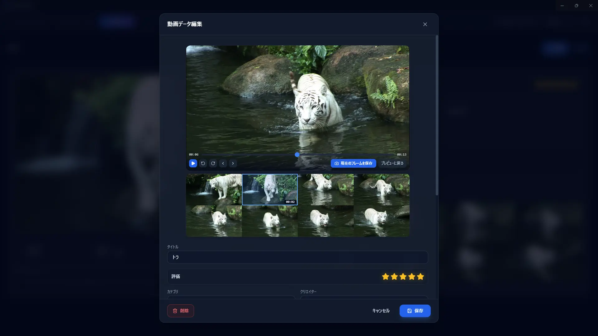

movieAlbumについて
movieAlbumはPC内の動画コレクションを効率的に整理・閲覧できるWindows用動画管理アプリです。
一般的な動画管理アプリは動画自体に評価やタグ付けを行うものがほとんど。
これでは自分の関心に応じた整理は困難です。
たとえばTVアニメを原作者で検索できるようにしたいとします。
しかし何十本もの動画ひとつひとつに原作者のタグを打つのはたいへん。
原作者と紐づくのはタイトルなのですから、タイトルごとに動画をまとめ、タグをつけられれば効率的です。
そこでmovieAlbumでは、それぞれの動画に加え、ユーザーが選択した項目にも評価やタグ付けをできるようにしました。
動画のお気に入りの場面をサムネイル画像にできます。
前編・後編などひとまとまりの動画はグループ化できます。
設定ファイルを複数もつことも可能で、たとえば「映画コレクション」「旅行の思い出」「グルメ動画」のように使い分けることもできます。

活用例
| 設定ファイル | リスト項目（タグ） | ||
|---|---|---|---|
| 映画コレクション | ジャンル | 公開年 | 主演俳優（特徴） |
| 旅行の思い出 | 年 | 旅行先（おもな目的） | 参加者 |
| グルメ動画 | ジャンル | 所在地（都道府県） | 価格帯 |
安心してお使いください
動画再生は使い慣れたOSデフォルトの動画プレイヤーを利用します。
各種データはアプリ内のデータベースで管理します。動画ファイルへの書き込み、外部へのデータ送信などはいっさい行いません。
価格は500円です。30日間無料で試用できます。試用期間中の機能制限はありません。
スクリーンショット

カテゴリ、名前、年、タグ、評価などによる絞り込みとソートが可能。サムネイルクリックで動画プレイヤーが起動します。

指定した項目にタグ、評価をつけられます。タグ、評価による絞り込みと項目によるソートができます。サムネイルクリックで絞り込みを行った動画一覧に遷移します。

グループ動画はスライダー形式で表示。サムネイルクリックで動画プレイヤーが起動します。

お気に入りの瞬間をサムネイルに設定できます。
主な機能
- カテゴリ、名前、評価、タグなどで動画を分類できます。
- メインの動画一覧に加え、選択した項目によるカスタムリストを作成できます。
- お気に入りのシーンをサムネイル画像として設定できます。
- 複数の動画をグループ化することも可能です。
対応ファイル形式
- mp4
- m4v
- webm
- ogv
- ogg
- avi*
- wmv*
- など
* 一部制限あり
movieAlbumであなたの動画鑑賞をより快適に。
アップデート履歴
- version 1.4.3
-
- サムネイル画像のあたりをタイムライン・サムネイルからつけられるようにしました。
- version 1.4.2
-
- ライトテーマ追加。
- UI改善。
- version 1.4.1
-
- 絞り込み機能のUIを改善。
- version 1.4.0
-
- 動画詳細画面にタイムライン・サムネイルを追加。
- version 1.3
-
- カスタム一覧を最大3つ作成可能に。
- グループ化解除の不具合を修正。
- version 1.2.0
-
- グループ動画の表示をスライダー形式に変更。
- 中国語（簡体）、中国語（繁体）対応を追加。
- version 1.1.0
-
- 検索機能追加。
- wmv動画などのサムネイル画像作成機能を改善
- ウィンドウ拡大時のレイアウトを調整。
- version 1.0.0
-
- 初回リリース。
プライバシーポリシー
- このアプリは、個人情報、またはデバイス情報などの個人を特定できる情報を収集、保存、送信しません。
- 外部サーバーや第三者との情報の共有は一切行いません。
ライセンス・謝辞
movieAlbumのソースコードはMIT Licenseに基づき公開されています。
動画のサムネイル生成・メタデータ解析のためにFFmpeg（GNU GPL v3.0、gyan.dev
ビルド）を同梱・利用しています。同梱バイナリに対応するソースコード提供に関するお問い合わせは、GitHubリポジトリまたは開発者までご連絡ください。